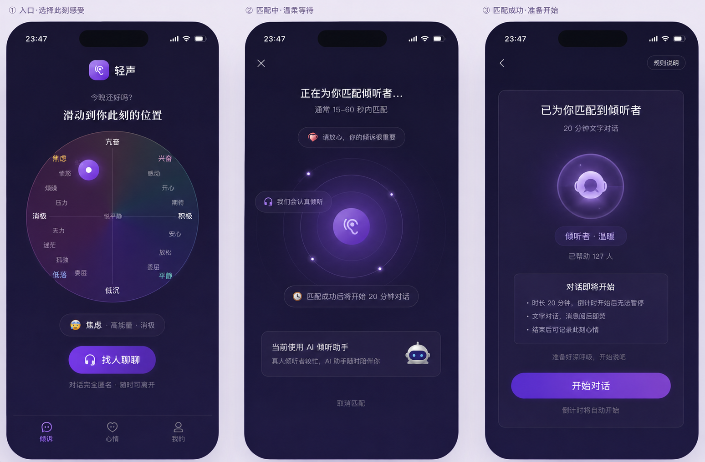

轻轻说出来，
有人会认真听
匿名、即时、有温度。在你最需要被倾听的时刻，匹配一个经过培训的陌生倾听者，用文字陪你度过难熬的20分钟。不评判、不建议、不留痕迹。
选择情绪 · 即时匹配
同流程 · 新版视觉方案
① 情绪入口
今晚还好吗？
滑动到你此刻的位置
对话完全匿名 · 随时可离开
①-b 意愿选择气泡
你想怎么聊？
② 匹配中
正在寻找倾听者...
通常15-60秒内匹配
匹配完全随机 · 对话匿名安全

②-b 匹配结果（三种卡片类型）
为你找到了
匹配成功
实际使用中仅匹配到一位 · 此处展示全部卡片类型
对话限时20分钟 · 内容不会被保存
③ 文字对话
嗨，我在这里。想聊什么都可以，不着急。
今天工作上被老板当着所有人的面批了一顿，感觉特别丢脸...
被当众批评确实很不好受。那一刻你是什么感觉？
就是很委屈，其实问题不完全是我的错，但他只针对我
听起来你觉得不公平，委屈里还有些愤怒对吗？
对，而且我不敢跟任何朋友说，怕他们觉得我矫情
这里很安全，没有人会觉得你矫情。你的感受都是真实的，值得被听见。
对话中 · 隐私保护与语音输入
③-a 隐私安全提醒
聊了这么久感觉你人真好，我们可以加个微信吗？
哈哈谢谢，我微信号是...
检测到对话中可能包含联系方式。为保护你的安全，建议不要向陌生人透露微信、手机号、住址等个人信息。
③-b 语音输入（内容合规监控困难，建议废弃）
嗨，我在这里。想聊什么都可以，不着急。
今天特别累，不太想打字...
没关系，你可以长按左边的麦克风按钮用语音说，我会认真听。
松开发送 · 上滑取消
③-c 语音转文字输入
嗨，我在这里。想聊什么都可以，不着急。
今天特别累，不太想打字...
没关系，你可以长按右边的语音按钮直接说，系统会帮你转成文字发出去。
我就是觉得很委屈，明明不是我的错，但所有人都看着我被骂
"而且回家以后越想越生气，我也不知道该怎么办"
③-d 对方离线提示
嗯嗯，我能理解你说的感觉。
有时候就是觉得自己一个人在扛
你愿意多说说吗？我在听。
谢谢你...其实最近工作
③-e 投诉入口与结果
我觉得你说的对，加个微信吧？
嗯...我不太方便
别这样嘛，我微信号 xxx 你加一下
选择原因
补充说明 (可选)
投诉已提交
我们会在 24 小时内完成审核。
如确认违规，将对该用户进行封禁处理。
对话结束 · 情绪记录
④ 情绪反馈
对话已结束
对话记录已保存在本地，仅你可见
现在感觉怎样？
很难过
一点
多了
试试这些也许有帮助：
⑤-A 好转趋势（展示曲线）
本周3次对话后情绪都有改善，你做得很好
本周情绪曲线
最近对话
⑤-B 下降趋势（重构叙事）
这周你主动来倾诉了4次。愿意面对自己的感受，本身就需要很大的勇气。
本周你的行动
也许可以试试
如果你觉得最近压力持续比较大，和专业的人聊聊也是一种勇敢。
"照顾自己的情绪，和照顾身体一样重要。"
我的角落 · 私人空间
小窝 Tab 页面
"谢谢你今晚听我说了这么多，真的好很多了"
— 来自某次匿名感谢卡
对话记录
"最近工作压力太大了，每天都在加班，回家以后越想越生气..."
"也没什么特别的事，就是一个人待着有点无聊..."
"和家里吵了一架，觉得自己不被理解..."
"下周要答辩了，感觉什么都没准备好..."
对话仅保存在本地 · 左滑可删除单条记录
我的倾听
"你很温暖，听你说话感觉好多了"
"谢谢你没有给建议，就是听着，这很重要"
"感觉你真的在认真听，谢谢"
每次倾听都是一份善意
倾听者视角 · AI辅助
⑥ 倾听者对话界面
今天工作上被老板当着所有人的面批了一顿，感觉特别丢脸...
被当众批评确实很不好受。那一刻你是什么感觉？
就是很委屈，其实问题不完全是我的错，但他只针对我
试试回应对方的"不公平感"——"听起来你觉得被不公平对待了，委屈里是不是还有些愤怒？"
⑦ 倾听者成长
我的倾听者主页
暖心值 Lv.3 · 已倾听128人
最近收到的感谢
下一个成就
再倾听22人可获得公益证书
为什么选择轻声
完全匿名、对话阅后即焚、禁止交换联系方式。你的脆弱不会留下任何痕迹，只留下被倾听后的释然。
每位倾听者经过专业培训，懂得积极倾听、不评判、不说教。AI做助手，真人给温暖——这是机器无法替代的。
无需预约、无需注册、无需付费。打开小程序，选择情绪，60秒内开始对话。深夜崩溃的时候，这里永远有人。
可持续的小而美
适合偶尔需要的时候
- check有效期内无限次真人倾诉
- check优先匹配
- check到期自动停止，不续费
¥29-49/月 · 最划算
- check无限次真人倾诉
- check优先匹配
- check选择倾听者风格
- check对话延长至30分钟
为企业员工提供匿名心理倾诉服务，为高校心理中心提供课外支持补充
深夜安全感的设计语言
- looks_one深色为主——不刺眼，暗示私密
- looks_two去身份化——无头像、无主页
- looks_33步以内开始倾诉
- looks_4阅后即焚——安全感优先
是在你最难的时候
有人认真听你说话。」